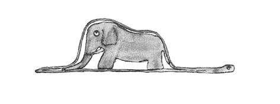
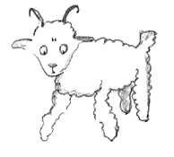
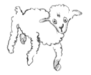
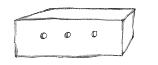

[Chapter 1]
Once WHEN I WAS six I saw a magnificent picture in a book about the jungle, called True Stories. It showed a boa constrictor swallowing a wild beast. Here is a copy of the picture.
In the book it said: “Boa constrictors swallow their prey whole, without chewing. Afterward they are no longer able to move, and they sleep during the six months of their digestion.”
In those days I thought a lot about jungle adven tures, and eventually managed to makemy first drawing, using a colored pencil. My drawing Number One looked lik this:
Once WHEN I WAS six I saw a magnificent picture in a book about the jungle, called True Stories. It showed a boa constrictor swallowing a wild beast. Here is a copy of the picture.
In the book it said: “Boa constrictors swallow their prey whole, without chewing. Afterward they are no longer able to move, and they sleep during the six months of their digestion.”
In those days I thought a lot about jungle adven tures, and eventually managed to make my first drawing, using a colored pencil. My drawing Number One looked like this:
I showed the grown-ups my masterpiece, and I asked them if my drawing scared them.
They answered, “Why be scared of a hat?”
My drawing was not a picture of a hat. It was a picture of a boa constrictor digesting an elephant. Then I drew the inside of the boa constrictor, so the grown-ups could understand. They always need explanations. My drawing Number Two looked like this:
The grown-ups advised me to put away my drawings of boa constrictors, outside or inside, and apply myself instead to geography, history, arithmetic, and grammar. That is why I abandoned, at the age of six, a mag nificent career as an artist. I had been discouraged by the failure of my drawing Number One and of my drawing Number Two. Grown-ups never understand anything by themselves, and it is exhausting for children to have to provide explanations over and over again.
So then I had to choose another career, and I learned to pilot airplanes. I have flown almost every where in the world. And, as a matter of fact, geography has been a big help to me. I could tell China from Arizona at first glance, which is very useful if you get lost during the night.
So I have had, in the course of my life, lots of en counters with lots of serious people. I have spent lotsof time with grown-ups. I have seen them at close range ... which hasn’t much improved my opinion of them.
Whenever I encountered a grown-up who seemed to me at all enlightened, I would experiment on him with my drawing Number One, which I have always kept. I wanted to see if he really understood anything. But he would always answer, “That’s a hat.” Then I wouldn’t talk about boa constrictors or jungles or stars. I would put myself on his level and talk about bridge and golf and politics and neckties. And my grown-up was glad to know such a reasonable person.
[Chapter 2]
SO I LIVED all alone, without anyone I could really talk to, until I had to make a crash landing in the Sa hara Desert six years ago. Something in my plane’s en gine had broken, and since I had neither a mechanic nor passengers in the plane with me, I was preparing to undertake the difficult repair job by myself. For me it was a matter of life or death: I had only enough drink ing water for eight days.
The first night, then, I went to sleep on the sand a thousand miles from any inhabited country. I was more isolated than a man shipwrecked on a raft in the middle of the ocean. So you can imagine my surprise when I was awakened at daybreak by a funny little voice saying, “Please . . . draw me a sheep . . .”
“What?”
“Draw me a sheep . . .”
I leaped up as if I had been struck by lightning. I rubbed my eyes hard. I stared. And I saw an extraordi nary little fellow staring back at me very seriously. Here is the best portrait I managed to make of him, later on. But of course my drawing is much less attractive than my model. This is not my fault. My career as a painter was discouraged at the age of six by the grown-ups, and I had never learned to draw anything except boa constrictors, outside and inside.
So I stared wide-eyed at this apparition. Don’t forget that I was a thousand milesfrom any inhabited territory. Yet this little fellow seemed to be neither lost nor dying of exhaustion, hunger, or thirst; nor did he seem scared to death. There was nothing in his appearance that suggested a child lost in the middle of the desert a thousand miles from any inhabited territory. When I finally managed to speak, I asked him, “But . . . what are you doing here?”
And then he repeated, very slowly and very seri ously, “Please . . . draw me a sheep . . .”
In the face of an overpowering mystery, you don’t dare disobey. Absurd as it seemed, a thousand miles from all inhabited regions and in danger of death, I took a scrap of paper and a pen out of my pocket. But then I remembered that I had mostly studied geography, history, arithmetic, and grammar, and I told the little fellow, rather crossly) that I didn’t know how to draw.
He replied, “That doesn’t matter. Draw me a sheep.”
Since I had never drawn a sheep, I made him one of he only two drawings I knew how to make—the one of the boa con strictor from outside. And I was as tounded to hear the little fellow answer: “No! No! I don’t want an elephant inside a boa constrictor. A boa constrictor is very dangerous, and an elephant would get in the way. Where I live, everything is very small. I need a sheep. Draw me a sheep.”
So then I made a drawing.
He looked at it carefully, and then said, “No. This one is already quite sick. Make another.”
I made another drawing. My friend gave me a kind, indulgent smile: “You can see for yourself. . . that’s not a sheep, it’s a ram. It has horns . . .”
So I made my third drawing, but it was rejected, like the others: “This one’s too old. I want a sheep that will live a long time.” So then, impatiently, since I was in a hurry to start work on my engine, I scribbled this drawing, and added, “This is just the crate. The sheep you want is inside.”
But I was amazed to see my young critic’s face light up. “That’s just the kind I wanted! Do you think this sheep will need a lot of grass?”
“Why?”
“Because where I live, everything is very small . . .”
“There’s sure to be enough. I’ve given you a very small sheep.”
He bent over the drawing. “Not so small as all that . . . Look! He’s gone to sleep . . .”
And that’s how I made the acquaintance of the little prince.